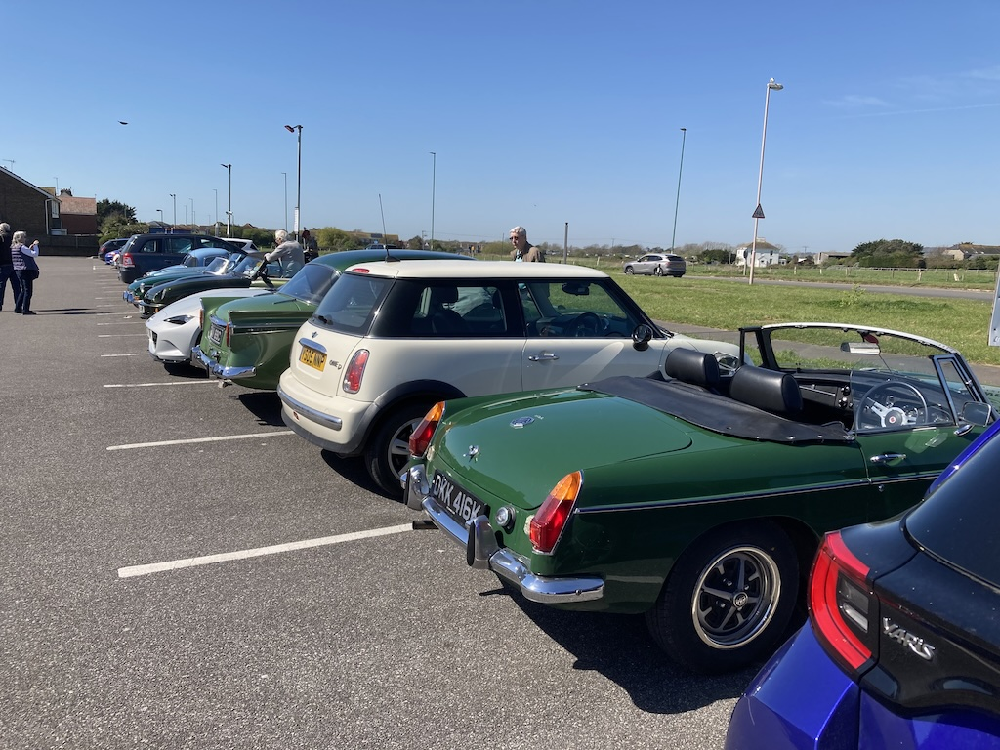
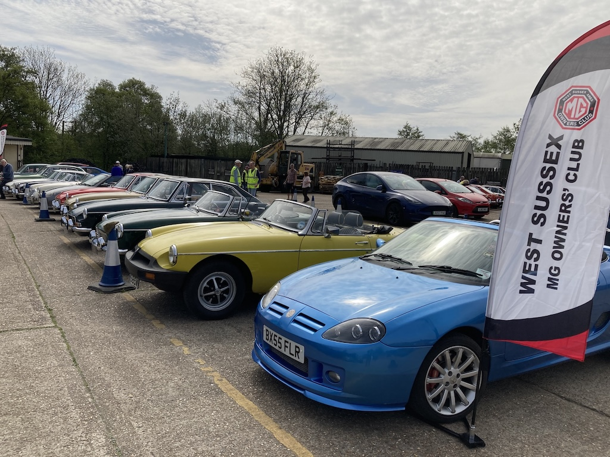
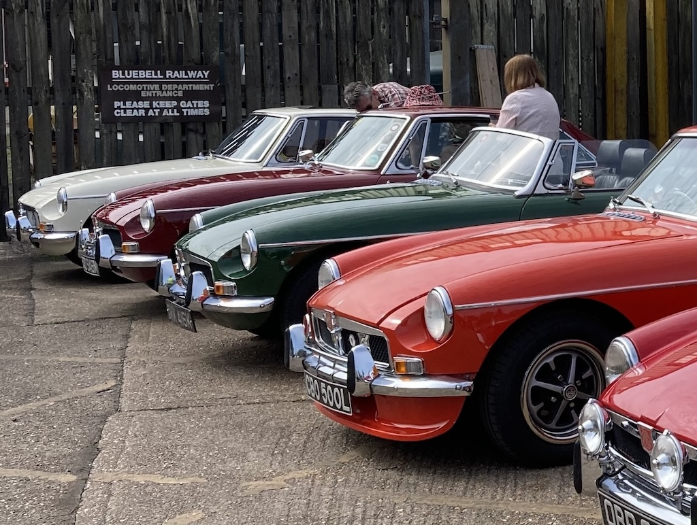
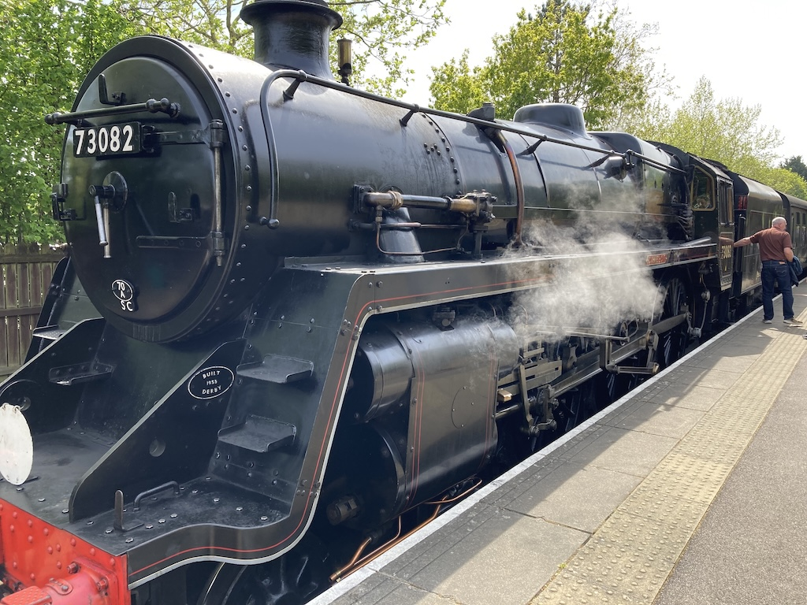
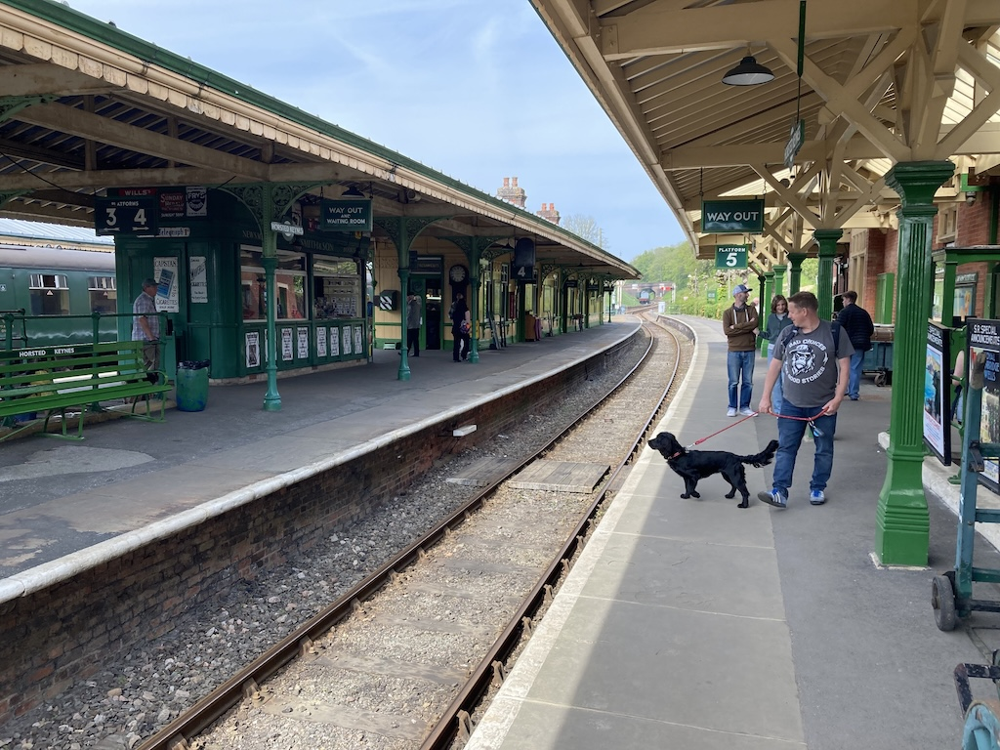
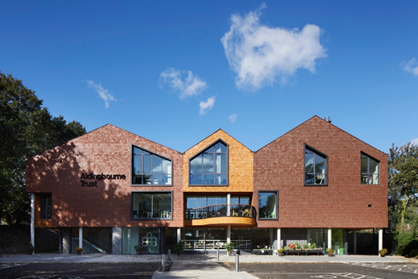

A Trip to Highdown Gardens, March
 We'd had a couple of dry, sunny days and another few were forcast. I'd been experimenting with the tonneau cover and so we went off to Highdown Gardens, just off the A259 on the western side of Worthing with the hood down and the tonneau ready to be zipped up when we left the car. It was a good run, with a round trip of 29 miles. We were home just in time to make lunch. I tried to get a photo of Angela by the car, but she walked away!
We'd had a couple of dry, sunny days and another few were forcast. I'd been experimenting with the tonneau cover and so we went off to Highdown Gardens, just off the A259 on the western side of Worthing with the hood down and the tonneau ready to be zipped up when we left the car. It was a good run, with a round trip of 29 miles. We were home just in time to make lunch. I tried to get a photo of Angela by the car, but she walked away!
Sussex Wanderers - Ashington to Shoreham

Wednesday 8th April turned out to be the hottest day of the year so far. David F-B coldn't make it, so I had persuaded Angela to come along and navigate. As it happened I new all the roads on the route, starting at the Red Lion, going up to the A272 and then back down through Partridge Green, Ashurst and Steyning before going over the Bostal and down to the sea front. We drove a total of 36 miles and the car ran well.Drive It Day - Bluebell Railway


Drive It Day was on Sunday 26th April, While Paul and Rowan were staying with us. So we took the B and the Panda the 27 miles to Sheffield Park Station, where the WSMGOC had arranged for us to park MGs in one part of the car park. There were over 15 MGs from the club, although Angela had to park the Panda in the general car park.
Rowan came with me (with the hood down) and enjoyed it enough to travel in the B on the way home. We did a total of 55 miles. But we did a few more miles on the train!We started by having coffee at Sheffield Park station before taking the train to Kingscote station (the second stop), where we got off the train for a walk and to have our picnic lunch. The old 'well hut' had been converted into a refreshments kiosk, so we were able to get coffee, and we looked inside the carriage workshop.
We then caught the next train onwards to East Grinstead, which was just a little further on. We had time to buy some ice cream before returning on the same train all the way back to Sheffield Park. However, the train stopped at Horsted Kynes station for twenty minutes, so we were able to have a little walk around the station, which has five platforms,before carrying on to Sheffield Park.

At Sheffield Park we looked around the engine shed before setting off home.Sussex Wanderers - Fontwell to Climping

It was one of the hottest days of the year so far. I drove to Lyminster to pick up David F-B and then we went on to the Aldingbourne Country Centre (pictured) to meet up with the other Sussex Wanderers. Their cafe had a veranda which was in the shade, so was very pleasant.We then followed a convoluted route taking in Whiteways roundabout twice and going through the centre of Arundel. We even did the diversion in the diversion. A couple of days earlier I'd noticed that a road was closed. So Andrew sent a revision, but told us about road works with traffic lights and David wanted to avoid going through Yapton. It was a difficult and tiring 29-mile route.
Overall I drove the B 74 miles, the furthest I've driven it in one day.